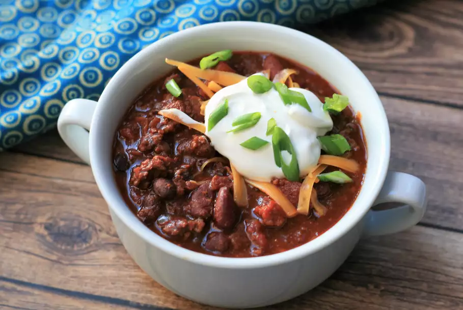

Chili

Chili with Chorizo and Chocolate
The smokiness of the bacon and liquid smoke complements the spiciness of the chorizo and sweetness of the chocolate in this chili. Just like any other chili, this is better the next day. Serve with a dollop of cilantro sour cream or some chocolate shavings.
This recipe was tweaked from another recipe on this site and has taken (4) first place prizes in chili cook-offs. The sweetness and spice makes people wonder what is different, setting you apart from the rest.
Ingredients
- 1 pound hickory-smoked bacon, chopped
- 2 pounds chorizo sausage, chopped
- 3 pounds ground sirloin
- 2 (29 ounce) cans tomato sauce
- 2 (28 ounce) cans peeled and diced tomatoes
- 2 medium onions, diced
- 1 tablespoon Italian seasoning
- ½ cup chili powder
- 2 tablespoons ground cumin
- 1 ½ tablespoons brown sugar
- 1 tablespoon liquid smoke flavoring
- 3 teaspoons garlic juice
- 2 teaspoons ground cinnamo
- 4 jalapeno peppers, seeded and chopped
- 4 (15.25 ounce) cans kidney beans, undrained
- 2 (15.25 ounce) cans black beans, undrained
- 3 ounces unsweetened chocolate, chopped
Steps
- Heat a large stockpot over medium-high heat. Brown bacon in the hot pot until slightly crisp, about 5 minutes. Drain and set bacon aside.
- Reduce heat to medium and add chorizo; cook and stir until slightly browned, about 5 minutes. Drain and set aside.
- Cook and stir ground sirloin in the same pot over medium-high heat until browned, crumbly, and no longer pink, 5 to 7 minutes. Drain the grease. Add the bacon and chorizo. Add tomato sauce, tomatoes, onions, and Italian seasoning. Stir in chili powder, cumin, brown sugar, liquid smoke, garlic juice, and cinnamon.
- Bring to a boil; reduce heat to a simmer and add jalapenos, kidney beans, black beans, and chocolate. Let simmer, stirring occasionally, until flavors are well blended, about 2 hours. Serve.